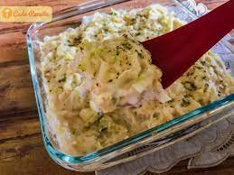

REPOLHO GRATINADO

- 1 repolho médio
- 3 colheres (sopa) de manteiga sem sal
- 1 cebola picadinha
- 2 dentes de alho amassados
- 1 xícara (chá) de leite (pode ser desnatado ou de coco)
- 1 caixa de creme de leite (ou creme de queijo)
- 2 colher (sopa) de amido de milho (opcional)
- Sal a gosto
- Cheiro verde a a gosto
- Mussarela a gosto
- Queijo ralado a gosto
modo de preparo
- Pique o repolho grosseiramente. Lave e deixe dentro de um vasilha coberto com água.
- Encha uma panela com água e levar para ferver. Quando a água começar a ferver, desligue o fogo,
coloque o repolho já picado e deixe ali até cozinhar. Quando ele estive murcho já está pronto.
- Em outra panela, derreta a manteiga em fogo baixo e refogue a cebola e o alho previamente picado.
- Adicione o amido de milho (pode ser substituído por farinha de trigo,
esse ingredientes serve para deixar o molho bem grosso). Misture bem até dissolver completamente sem ficar bolinhas.
- Adicione o leite, o creme de leite, o sal e o queijo ralado.
Misture rapidamente para não empelotar. Mexa até engrossar e desligue o fogo.
- Transfira o repolho cozido sem a água para um refratário.
Cubra com o molho e misture tudo. Cubra com mussarela a gosto e leve para gratinar no forno.
- Deixe assar em forno preaquecido a 180° C por cerca de 20 minutos,
mas fique de olho para não queimar. Sirva!
|